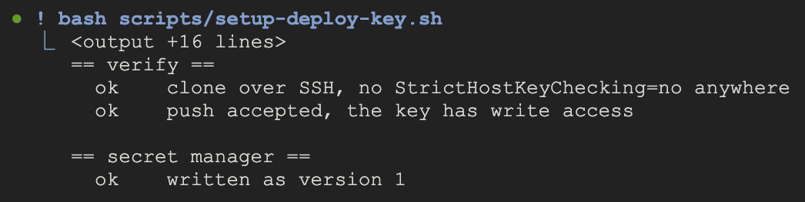
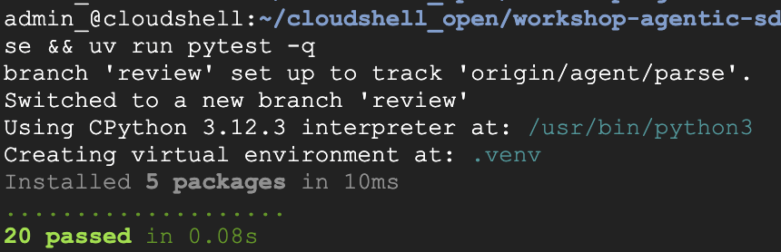

This lab simulates the common scenario for feature requests that provide detailed information, though lack to cover edge and boundary conditions.
In this lab you'll:
- Use Antigravity CLI with skills, subagents, and a MCP server
- Deploy an agent to Gemini Enterprise Agent Platform
- Use an adversarial skill to refine a spec
- Interfact with a code-agent deployed to Agent Platform. You'll instruct this agent to write the implementation code starting from your GitHub commit hash
This lab is built on two practices. Spec-driven development builds a specification for review and agreement before any code is written. Test-driven development, TDD writes the tests before the implementation they check. Spec clarity is of utmost importance. This lab uses an adversarial skill to ensure a clear spec is authored and approved before coding starts.
The Agent Platform agent is deployed using Agent Identity.
The lab is deliberately simplified: one request, one spec, one agent, one repository, and no CI.
What you'll learn
- How to interrogate a specification until the ambiguity is gone, using an agent skill that refuses to decide anything for you
- How to turn resolved decisions into acceptance tests, which are what make an agent's work checkable
- How to deploy an agent to Agent Runtime under its own identity, and dispatch work to it at a pinned commit
- How to author and use Antigravity CLI skills, subagents, and MCP servers
What you'll need
- The preflight from the setup guide, finished and reporting ready
- A GitHub account with
ghlogged in, forking to your own account
Open this in Cloud Shell and the guide comes with you, in a panel beside the terminal you are typing into:
That clones the lab repository. You fork it in the next step, from inside that same clone.
Restore your Cloud Shell
Cloud Shell keeps your $HOME and forgets the rest. Four things have to be true before you start:
agyis current, and still logged ingcloudis pointed at your projectMODEL_LOCATIONandAGENT_ENGINE_LOCATIONare setghis still authenticated
Update agy first. It lives on the VM rather than in $HOME, so a new session may have an older one. No harm if you are already current.
sudo agy update && agy --version
Check your agy login:
agy -p "Reply with exactly: authenticated"
If it asks you to open a URL instead of answering, the grant has lapsed. Log in again with Authenticate agy from the setup guide, then come back.
Point gcloud at it. A new session has no project set, and every gcloud command below needs one:
gcloud config set project YOUR_PROJECT_ID
gcloud config get-value project
Set your two locations. A new shell has neither. MODEL_LOCATION is fixed by the model: the Gemini 3 family answers only from global. Your engine region is whatever you chose during setup, and the project remembers it, because Terraform replicated the secret into that region:
export MODEL_LOCATION=global
export AGENT_ENGINE_LOCATION=$(gcloud secrets describe agentic-sdlc-deploy-key \
--format='value(replication.userManaged.replicas[0].location)')
echo "$MODEL_LOCATION / $AGENT_ENGINE_LOCATION"
Then the last one, your GitHub login, which should have survived:
gh auth status
Verify your work
gcloud secrets describe agentic-sdlc-deploy-key --format='value(name)'
It should print the secret's resource name. That secret is empty. Preflight created the container, and you will put a key in it later today.
The application lives in its own repository. You fork it, because the agent will push to your copy and you will merge its work.
gh repo fork alanblythe/workshop-agentic-sdlc-lab --clone --remote
cd workshop-agentic-sdlc-lab
gh repo set-default "$(git remote get-url origin)"
gh repo edit --enable-issues
origin now points at your fork and upstream at the original. The rest is not housekeeping:
gh repo set-default— forking pointsghat upstream, so without it the issue you file lands on the workshop's copy rather than yours, and nothing tells yough repo edit --enable-issues— GitHub disables issues on every new fork, which you would otherwise discover two steps from here, when you try to file one
Verify your work
gh repo view --json nameWithOwner,isFork,hasIssuesEnabled \
--jq '.nameWithOwner + " fork=" + (.isFork|tostring) + " issues=" + (.hasIssuesEnabled|tostring)'
The owner should be you, with fork=true and issues=true.
The agent takes up to 10 minutes to build and deploy. Continue without the next steps while it deploys.
(cd coder-agent && agents-cli deploy \
--project "$(gcloud config get-value project)" \
--region "$AGENT_ENGINE_LOCATION" \
--agent-identity \
--update-env-vars GOOGLE_CLOUD_AGENT_ENGINE_ENABLE_TELEMETRY=true,MODEL_LOCATION=global \
--no-wait)
--no-wait returns as soon as the build is submitted. --agent-identity enables Agent Identity: it gives the agent a SPIFFE identity rather than a service account. This identity is granted access to Secret Manager by an IAM binding that preflight's Terraform put on the secret. That binding names every Agent Runtime agent in the project rather than one engine, so it was in place before this agent existed.
Verify your work
(cd coder-agent && agents-cli deploy --status)
It reports the deployment as in progress. You are not waiting for it. The next four steps happen while it builds.
docs/request.md is the request as it arrived. It is short, and it is the only statement of what anyone actually wants.
cat docs/request.md
Create the GitHub issue, the agent's commits will reference it and merging its branch will close it:
gh issue create --title "Account health scoring" --body-file docs/request.md
Read docs/spec.md. We'll use an adversarial refinement skill to ensure the spec is clear and can be used for creating acceptance tests and writing code.
cat docs/spec.md
It already conforms to docs/spec-template.md, a representative template that may be used as part of a broader SDLC.
As you read the spec you may ask these questions:
Could acceptance tests and code be implemented independently from each other? Are there subtle gaps in the understanding of the data?
The data the spec is written against is fixtures/usage.csv.
The interrogator is a skill called spec-adversary, and it ships in this repository at .agents/skills/spec-adversary/SKILL.md, Antigravity CLI will automatically load it. A workspace skill is found relative to where agy starts, so start it from the lab repo, workshop-agentic-sdlc-lab:
cd ~/cloudshell_open/workshop-agentic-sdlc-lab
agy --mode accept-edits
Use the skill to clarify the spec
Open .agents/skills/spec-adversary/SKILL.md and read it. The skill instructs:
- sweep the spec before asking anything
- one question at a time
- never recommend a reading.
- to give choices allowing simple selection
- writes decisions into
docs/spec.md
Ask Antigravity CLI to use the skill:
Use the spec-adversary skill on docs/spec.md. The sample data is
fixtures/usage.csv. One ambiguity at a time.
The sample data it asks about is fixtures/usage.csv.
Keep going until it stops finding anything consequential. That usually takes longer than people expect, and the questions get better as they get smaller.
Verify your work
Open the Source Control view in the editor and click spec.md to see what changed.

The gate, and you can check it yourself:
Statusis ApprovedOpen questionsis emptyDecisionshas a row per question you answered, each naming the case that would have differed
Every hunk in that diff should be one of those three. A hunk that is a rewording is the adversary editing your spec, which it is not allowed to do.
Now codify the spec and decisions into acceptance tests using the contract-writer agent.
Still in agy:
Use the contract-writer agent to write acceptance tests into scorer/tests/ from
the resolved docs/spec.md, and the interface they call into scorer/usage.py. Cover
the parsing rules and the scoring rules separately. Every function body in
scorer/usage.py raises NotImplementedError and nothing else. Cite the decision
id on every assertion that came from one.
The adversary skill helps you the product manager clarify requirements. The contract-writer subagent writes the stubbed tests. You'll see the agent spawn: turning resolved decisions into assertions, and which is not allowed to decide anything. If it reports an assertion it could not derive, that is an ambiguity the interrogation missed, and the adversary reopens it rather than letting a guess into a test.

These tests are the contract. They are what "done" means. They provide codified assertions to ensure the written code fulfills the spec requirement.
Verify your work
Leave agy first, so these run in the shell:
/exit
First, check what files the subagent created:
git status --short scorer/
You should see the three test files authored by the subagent.
Run the tests:
uv run pytest -q

Failures, not errors. The acceptance tests fail, because the implementation hasn't been coded yet.
Your agent should be up by now, and you are back in the shell.
(cd coder-agent && agents-cli deploy --status)

If there is no pending deploy operation, list the deployed agents:
(cd coder-agent && agents-cli deploy --list)
Confirm it is running under its own identity rather than a service account. gcloud has no surface for that field, so scripts/agent-identity.sh asks the REST API.
It only reads:
- Finds your
coder-agentengine - Reads
spec.effectiveIdentityover REST - Prints what it found, changes nothing
bash scripts/agent-identity.sh
Verify your work
Agent Identity:
principal://iam.googleapis.com/...system.id.goog/subject/ENGINE_ID
Service accounts:
service-PROJECT_NUMBER@gcp-sa-aiplatform-re.iam.gserviceaccount.com
The first is what the next step grants access to.
The commit in two steps needs a git identity, and Cloud Shell often has none. Look first:
git config --global --get-regexp '^user\.'
- Two lines back — you already have one, move on
- Nothing back — it is unset, so set it:
git config --global user.name "Your Name" && git config --global user.email "you@example.com"
Use the address on your GitHub account, which is what the commits are attributed to. --global writes to $HOME, which Cloud Shell keeps, so this is once per machine rather than once per session.
Verify your work
The first command again, with both lines back.
The agent is written to push its commit to GitHub, so it needs a key of its own. scripts/setup-deploy-key.sh is what does it.
What it checks, changing nothing:
gh,gcloud,git,ssh-keygenpresent- You have admin on the fork
- Preflight's secret exists
What it changes:
- Revokes any previous deploy key
- Generates an ed25519 key pair
- Adds it, write access, this repository
- Proves a push works,
--dry-run - Private half into Secret Manager
- Disables older secret versions
bash scripts/setup-deploy-key.sh

The push it makes to prove the key works is a --dry-run, so it is a real authorization check that leaves no ref behind. Nothing is left on your machine.
Verify your work
The script ends by printing the secret the agent reads and the repository it can push to. It also refuses to finish unless a real clone and a real push succeeded, so reaching the end is the verification.
Commit the contract and send the work.
git add -A && git commit -m "The contract: the resolved spec and the tests it implies" && git push
The agent runs on Agent Platform, not on this machine. You reach it through geap, the MCP server registered during setup, from inside agy:
agy
Paste this:
Use the geap tools. Run list_agents to find coder-agent in this project, then
start_query on it. The message is a JSON string:
{"repo": "<owner>/<fork>", "sha": "<HEAD>", "branch": "agent/parse", "issue": "1"}
Get repo and sha by running git here: the fork's owner/name from the origin
remote, and the sha that origin/main points at.
Then follow the run: call read_query in a loop, passing the next_cursor it
returns, until state is no longer "running". Print any new lines after each
call, before you wait.
The lines you see are the agent narrating itself: every file it reads, every command it runs, and each commit it pushes.
Watch which files it edits. Only scorer/usage.py means it is working inside the contract; an edit naming a test is the agent changing what "done" means.
Leaving agy does not stop the agent. It runs on Agent Platform and keeps going; read_query picks the trajectory back up from any cursor.
Verify your work
The agent's branch appears on your fork and at least one commit lands on it. When the run reports it is done, leave agy and ask for the compare page:
/exit
echo "https://github.com/$(gh repo view --json nameWithOwner -q .nameWithOwner)/compare/main...agent/parse"
Narration going quiet is not the agent stopping. read_query returning no new lines with a state of "running" means it is working, which is why the branch, not the narration, is what tells you it landed.
Don't merge yet, review the file diff to see what changes the coder-agent made.
- Open the compare page you printed above, the branch's diff on GitHub
- Click Create pull request
- Leave the title and the description alone: GitHub fills both from the agent's commit,
Closes #1and all
Read the diff under Files changed. Then run the tests yourself. To keep things simple, no CI is part of this lab.
git fetch origin && git checkout -b review origin/agent/parse && uv run pytest -q

Verify your work
The tests pass, and the diff touches the implementation only. If the agent edited a test to make it pass, you have learned something about how contracts need to be written.
Merge the pull request. Your issue closes as it lands.
One command removes everything the day created: scripts/teardown.sh.
What it removes:
- The deployed
coder-agentand sessions - The
agentic-sdlc-deploy-keysecret - The deploy key on your fork
What it leaves:
- Your branches and the agent's commits
- The APIs, still enabled
bash scripts/teardown.sh
It prints that list for your project, then asks before doing any of it. Use --dry-run first if you would rather look than trust. The APIs stay on because your project may have been using them before today, and turning them off is not this script's call.
What you did
- Improved a spec using an adversarial review skill, which lives in your fork at
.agents/skills/spec-adversary/SKILL.md - Used Antigravity CLI to turn the resolved decisions into acceptance tests
- Deployed a coding agent to Agent Runtime on Gemini Enterprise Agent Platform, under an identity of its own
- Dispatched work to it at a pinned commit, and merged what it pushed
Completed a simplified scenario using TDD and Spec-driven development. The next evolution to this scenario could be agent teams that act as your teammates within a chat group. You could chat with them as their respective roles e.g. product owner, software engineer, peer reviewer, etc.
What's next
Two things to try with what is already in your fork:
- Run it again with a spec you actually own, and see how far the interrogation gets before you have to make a decision you were avoiding
- Change what the adversary refuses to decide for you. It is a skill in your fork, and skills and plugins is how they are written
Codelabs that pick up where this one stops
- Stateful Data Science Agent on Agent Engine — Sessions and Memory Bank, the state this lab never keeps
- Personalized agents with ADK, MCP and Memory Bank — memory and tools together
- Multi-agent systems with ADK, Agent Runtime and A2A — agents calling agents, rather than one agent doing a job
- Spec-driven development with Antigravity CLI — the same practice against live data, without the contract or a remote agent
- Automated UI testing with Antigravity CLI and BrowserMCP — skills and a multimodal MCP server
- Deploy to Cloud Run from Antigravity using an MCP server
- Developer Knowledge MCP and Workspace MCP in Antigravity
Documentation
- Gemini Enterprise Agent Platform — and Agent Runtime, for what else it hosts
- ADK on Agent Platform, ADK documentation and google/adk-python
- agents-cli and google/agents-cli — what deployed the agent here, and what installed the ADK skills during setup
- Antigravity CLI
- geap-mcp — the MCP server you dispatched through, and its four tools
Keeping up